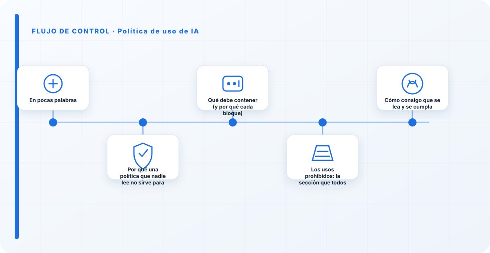
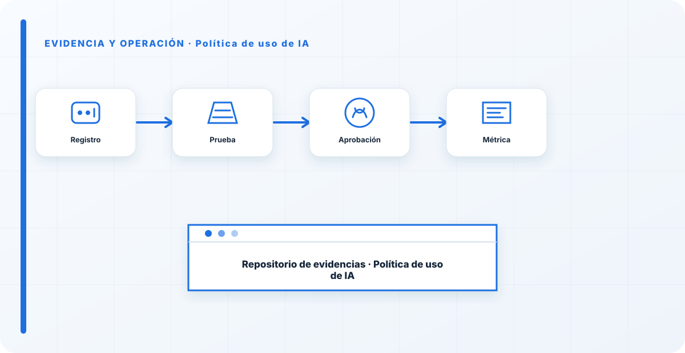

En pocas palabras
La política de uso de IA es el único documento de todo tu gobierno que va a leer una persona normal, la que un martes cualquiera abre una herramienta de IA y se pregunta si puede pegar ahí el informe en el que está trabajando. Todo lo demás —el SGIA, los comités, las metodologías— vive en las alturas; la política de uso vive en el escritorio del empleado. Por eso, si nadie la lee o no dice nada concreto, es teatro. El objetivo no es cubrir el expediente: es que, en treinta segundos, cualquiera sepa qué puede hacer con la IA, qué no, con qué datos y a quién preguntar.
Por qué una política que nadie lee no sirve para nada
He leído decenas de políticas de IA, y la mayoría fallan por uno de dos extremos. Unas son un tratado de veinte páginas lleno de principios y referencias legales que nadie termina y, desde luego, nadie recuerda cuando le hace falta. Otras son cuatro buenas intenciones —"usaremos la IA de forma ética y responsable"— que suenan bien y no prohíben absolutamente nada. Las dos son inútiles, por motivos opuestos: una porque no se lee, otra porque no dice nada.
La política que a mí me sirve es corta, concreta y operativa. No tiene que explicar qué es la IA ni citar el reglamento entero; tiene que decirle al empleado, en su idioma, dónde están las líneas. Y tiene que estar conectada con el resto del gobierno: la política es la cara visible de decisiones que se toman más arriba —qué herramientas se aprueban, qué datos se clasifican como sensibles—, no un documento aislado que escribió alguien de legal y que nadie más ha visto.
Qué debe contener (y por qué cada bloque)
Estos son los bloques mínimos. Si falta uno, la política tiene un agujero por el que se cuela el Shadow AI o una fuga de datos. No hace falta que sean largos; hace falta que estén y que digan algo concreto.
| Bloque | Qué fija |
|---|---|
| Propósito y alcance | A quién aplica (empleados, terceros) y a qué usos de IA. |
| Principios | Supervisión humana, transparencia, no discriminación, seguridad y legalidad. |
| Usos permitidos | Casos aprobados y herramientas autorizadas. |
| Usos prohibidos | Líneas rojas explícitas: qué datos nunca entran, qué decisiones no se automatizan. |
| Datos y confidencialidad | Qué clasificación de datos puede tocar la IA y cuál no. |
| Herramientas y Shadow AI | Lista de herramientas aprobadas y la vía oficial para pedir nuevas. |
| Supervisión humana | Qué decisiones exigen revisión de una persona antes de aplicarse. |
| Responsabilidades | Quién responde: usuario, propietario del sistema, comité de IA. |
| Incumplimiento | Consecuencias y cómo se gestionan. |
| Vigencia y revisión | Versión, fecha y cada cuánto se revisa. |

Los usos prohibidos: la sección que todos evitan
Si solo pudiera exigir una sección, sería esta. Y es, casualmente, la que casi todas las políticas esquivan, por miedo a "limitar la innovación". Es un miedo equivocado: una política que no prohíbe nada no protege nada. Las líneas rojas son lo que convierte un documento de intenciones en una herramienta de verdad.
Las que casi siempre acaban estando, con las palabras adaptadas a cada organización: no introducir datos confidenciales, personales o clasificados en herramientas de IA no aprobadas; no automatizar decisiones que afecten a personas sin que un humano las revise; no usar IA para generar contenido que se presente como humano cuando la transparencia lo exija; y no conectar herramientas de IA a sistemas o datos corporativos sin pasar por el proceso de aprobación. Tres o cuatro líneas rojas claras protegen más que veinte páginas de principios.
Cómo consigo que se lea y se cumpla
Una política perfecta que vive en una carpeta no ha evitado un solo incidente. Estas son las cosas que hago para que salga del PDF:
- Que sea corta. Una o dos páginas. Si no cabe, es que estoy mezclando la política con el procedimiento; los separo.
- Que nombre herramientas concretas. "Usa las herramientas aprobadas" no sirve si no digo cuáles son. La lista de herramientas aprobadas es lo que le quita oxígeno al Shadow AI.
- Que tenga una vía fácil para pedir cosas. Si pedir una herramienta nueva es un calvario, la gente se la salta. La política debe abrir la puerta oficial, no solo cerrar las clandestinas.
- Que se comunique, no solo se publique. Una política que se sube a la intranet y ya está, no existe. Se explica, se recuerda y se integra en la incorporación de la gente.
- Que se revise. El AI Act y las herramientas cambian cada pocos meses; una política de hace un año probablemente ya tiene agujeros.
La política de uso es donde el gobierno de IA se gana o se pierde el respeto de la gente. Si es larga e incumplible, la organización aprende a ignorar todo el gobierno de IA, no solo la política. Si es corta, clara y con líneas rojas de verdad, la gente la usa y confía en el resto. Prefiero una página que alguien pueda incumplir —porque dice cosas concretas— a veinte que nadie puede incumplir porque no dicen nada.
Los errores que veo una y otra vez
- Política de veinte páginas que nadie lee ni recuerda.
- Solo principios, sin usos prohibidos concretos.
- No nombrar herramientas aprobadas, dejando la puerta abierta al Shadow AI.
- No decir qué clasificación de datos puede tocar la IA.
- Publicarla una vez y no volver a mirarla mientras el AI Act y las herramientas cambian.
- Escribirla solo desde legal, sin negocio ni seguridad, y que quede desconectada de la realidad.
Descárgala y adáptala ARTEFACTO
Plantilla de política de uso de IA con todos los bloques y marcadores para rellenar. Pégala en tu procedimiento y ajústala a tu organización — es un punto de partida, no un documento para firmar tal cual.
Plantilla · Política de uso de IA
Estructura completa con placeholders: alcance, principios, usos permitidos/prohibidos, datos, Shadow AI, supervisión, responsabilidades y revisión.
Abrir plantilla HTML↓ Descargar CSVCómo lo llevaría a un entorno real
Cuando aterrizo política de uso de ia en una organización, no empiezo por comprar una herramienta ni por redactar veinte páginas. Empiezo por dibujar qué ocurre hoy: quién solicita el cambio, quién lo aprueba, qué sistemas intervienen, qué datos cruzan el proceso y quién se entera cuando algo falla. Ese dibujo suele descubrir más problemas que cualquier checklist. En gobernanza, lo peligroso no es solo carecer de controles; también lo es creer que existen porque alguien los escribió una vez.
Después separo lo imprescindible de lo deseable. Lo imprescindible debe poder comprobarse: un responsable identificado, una regla clara, una evidencia fechada y un mecanismo para reaccionar. En este caso revisaría especialmente política, regla y excepción. No me vale una respuesta del tipo «lo gestiona el proveedor» o «eso lo mira seguridad». Necesito saber qué persona toma la decisión, con qué información y dentro de qué plazo.
La implantación debe crecer con el riesgo. Un piloto interno puede funcionar con una ficha breve y una revisión manual. Un sistema que afecta a clientes, empleados, dinero o información sensible necesita segregación de funciones, pruebas independientes, monitorización y un expediente mantenido. Mi criterio es sencillo: cuanto más difícil sea deshacer el daño, más fuerte debe ser la barrera antes de producción.

Decisiones que deben quedar por escrito
Hay decisiones que no deberían vivir en una reunión ni en un mensaje de chat. Para política de uso de ia dejaría documentados el alcance, los supuestos, los límites de uso, las excepciones aceptadas y las condiciones que obligan a detener o reevaluar. El documento no tiene que ser enorme, pero sí debe permitir que otra persona entienda por qué se hizo lo que se hizo.
También registraría quién puede cambiar control, quién valida evidencia y quién recibe las alertas relacionadas con revisión. Cuando esas tres responsabilidades se mezclan, aparece el clásico problema: el mismo equipo construye, aprueba y declara que todo funciona. No siempre se puede separar por completo, sobre todo en organizaciones pequeñas, pero al menos debe existir una revisión por alguien que no dependa del éxito inmediato del despliegue.
Las excepciones merecen un tratamiento propio. Una excepción sin fecha de caducidad acaba convirtiéndose en la arquitectura real. Por eso exigiría motivo, riesgo aceptado, responsable, compensaciones, fecha de revisión y criterio de cierre. Si falta uno de esos elementos, no es una excepción gestionada; es una deuda invisible.
Un ejemplo práctico
Imaginemos que un equipo quiere incorporar política de uso de ia a un servicio que ya está en producción. La propuesta promete reducir tiempos y automatizar tareas, pero utiliza componentes que cambian con frecuencia. Antes de aprobarlo, pediría una prueba limitada, un inventario de dependencias, un flujo de datos y una definición clara de qué acciones quedan fuera del alcance.
Durante la prueba recogería resultados normales y casos límite. No solo miraría si funciona; comprobaría qué ocurre cuando faltan datos, cambia una versión, se pierde conectividad, llega una entrada manipulada o un usuario intenta superar sus permisos. Ahí es donde se ve si el diseño aguanta. En muchas pruebas felices todo parece seguro porque nadie ha intentado romper la hipótesis de partida.
Si los resultados son aceptables, la salida a producción tendría condiciones: versión fijada, configuración aprobada, logs disponibles, responsables de guardia, procedimiento de rollback y revisión tras las primeras semanas. Si alguno de esos elementos no existe, prefiero retrasar el despliegue. Un día de demora suele ser más barato que investigar después un comportamiento que nadie puede reconstruir.
Qué evidencias guardaría
Para demostrar que el control funciona conservaría evidencias que cuenten una historia completa, no capturas sueltas. La historia debe enlazar necesidad, decisión, implementación, prueba y operación. En política de uso de ia eso incluye como mínimo la ficha del activo, el diagrama vigente, la configuración aprobada, el resultado de las pruebas y el registro de cambios.
No guardaría información por acumular. Si los logs contienen prompts, documentos, datos personales o secretos, aplicaría minimización, control de acceso y retención. La evidencia debe ayudar a investigar y auditar sin crear una segunda fuga de información. Es frecuente endurecer el sistema principal y dejar un repositorio de evidencias abierto a demasiadas personas.
- Propietario y finalidad de política de uso de ia, con fecha de revisión.
- Inventario de política, regla y dependencias asociadas.
- Criterios de aceptación y resultados sobre excepción y control.
- Configuración efectiva, versión y aprobación del cambio.
- Alertas, incidentes, excepciones y acciones correctivas cerradas.
Señales de que el control no está funcionando
El primer síntoma es que nadie sabe responder con rapidez quién es el responsable. El segundo es que la documentación describe una versión distinta de la que está operando. El tercero es que las alertas existen, pero llegan a un buzón que nadie revisa. Cuando aparecen esos tres síntomas, el problema no es tecnológico: el control se ha desconectado de la operación.
También desconfío de las métricas demasiado perfectas. Cero incidentes, cero excepciones y cien por cien de cumplimiento pueden significar excelencia, pero con frecuencia significan que no estamos mirando. Prefiero indicadores que enseñen tendencia: tiempo de corrección, antigüedad de excepciones, cobertura de pruebas, cambios sin revisión y reincidencias.
Por último, revisaría el comportamiento después de cada cambio significativo. En IA, una actualización de modelo, dataset, prompt, herramienta, permiso o proveedor puede alterar el riesgo sin cambiar el nombre del servicio. Si el proceso solo reevalúa cuando se crea un proyecto nuevo, se quedará ciego durante la mayor parte de la vida útil.
Mi criterio de cierre
Considero que política de uso de ia está razonablemente controlado cuando el equipo puede explicar el proceso sin depender de una sola persona, reconstruir una decisión con evidencias y detener el servicio sin improvisar. No busco perfección documental; busco que la organización pueda tomar decisiones repetibles bajo presión.
El cierre no consiste en marcar todas las casillas. Consiste en demostrar que los riesgos relevantes tienen propietario, que los controles se prueban y que las desviaciones producen una acción. Si la evidencia no cambia ninguna decisión, probablemente estamos generando burocracia. Si una decisión importante no deja evidencia, estamos creando fragilidad.
Este enfoque es el que intento mantener en toda CyberLibrary AI: explicar el control de forma que lo entienda negocio, pero con suficiente profundidad para que arquitectura, seguridad, auditoría y operaciones puedan aplicarlo de verdad.
Referencias y marcos relacionados
Contenido educativo. La plantilla es un punto de partida, no asesoramiento jurídico: adáptala y revísala con tu área legal.